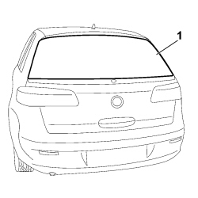

7035B04 REAR WINDSCREEN - ELIMINATE LEAKS
- Path
- Procedures > 70 FITTINGS > 7035 BODY WINDOW GLASSES > 7035B REAR WINDSCREEN > 7035B04 REAR WINDSCREEN - ELIMINATE LEAKS
- Kind
- repair procedure (removal / refitting; the operation number is the code)
- Applies to
- all engines; all production periods
- Interactive page
- https://sloeber94.github.io/elrnDB-fCrm/en/#/194001004
Applies to: all engines; all production periods
- Wet the outer part of the rearscreen glass using soapy water.
1. Blow through with compressed air and identify any penetration points checking along the entire perimeter of the glass.

Applies to: all engines; all production periods
If the penetration point is small in size, seal the area concerned from the inside.
Wait for it to dry and repeat the test.
If penetration point is more extensive, detach and refit the rearscreen.
Op. 7035B14 REAR WINDOW GLASS - R.R INCLUDES CLEANING HOUSING